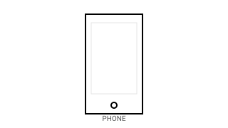
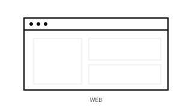
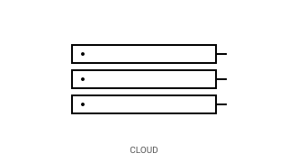

PHONE
Native mobile runtime built on Expo. Reads + writes the same operator vault as web and cloud. Designed for offline-tolerant capture and quick replay.
ClarityOS is an operator-grade orchestration layer that holds context across phone, web, and cloud. The model does the compute. The OS holds the state. The contract between them does not drift.
The same kernel state is reachable from every device. No re-prompting. No re-uploading. No re-explaining.

Native mobile runtime built on Expo. Reads + writes the same operator vault as web and cloud. Designed for offline-tolerant capture and quick replay.

Browser cockpit for long-form work. Surfaces threads, projects, the operator timeline, and the regression-first protocol panel. Auth-gated; no anonymous state.

FastAPI backend on Cloud Run. Per-user encrypted vault, timeline, threads, projects, and the intelligence kernel. Every endpoint is session-scoped.
ClarityOS does not load plugins, does not register skills, and does not branch behavior on whether some external manifest is present. The interpreter is plain Python in the kernel. It owns context assembly, model routing, and result coercion. The model receives that context, returns text. Nothing else crosses the boundary.
Reasoning modes are kernel functions, not loadable add-ons. Each one has a deterministic surface, a stable schema, and a graceful degrade path. When a model call fails, the kernel does not raise — it returns a structured result that downstream code can rely on.
Access is gated by cohort. Request a slot and we will reply with onboarding next steps.